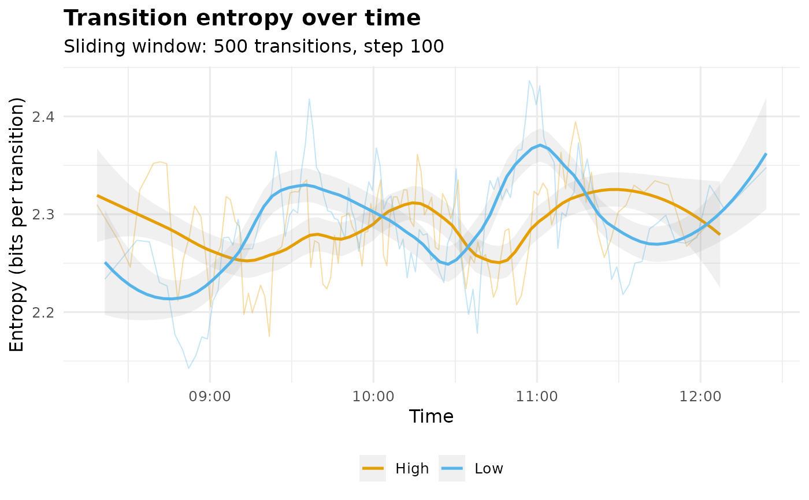

entropy_trajectory() tracks transition entropy over time: it forms the
transitions within each actor's sequence of an event log, pools them in
time order, and slides a window of a fixed number of transitions across
the stream, giving one entropy estimate per window. A group column gives
one trajectory per group. This turns transition entropy from a snapshot
into a process measure, as Krejtz et al. (2025) do when they track gaze
transition entropy through the phases of a task.
A falling trajectory means the transitions become more predictable
(routinisation), a rising one less predictable (exploration), and a level
shift marks a change of phase. Each window's estimate rests on window
transitions, and with the default step neighbouring windows share four
fifths of them, so their estimates are not independent: read the smoothed trend of plot() rather
than single windows. For the whole-process value with credible intervals,
use transition_entropy() and entropy_bayes().
Usage
entropy_trajectory(
data,
action,
actor = NULL,
time = NULL,
group = NULL,
window = 500L,
step = NULL,
base = 2
)
# S3 method for class 'net_entropy_trajectory'
print(x, digits = 3, ...)
# S3 method for class 'net_entropy_trajectory'
summary(object, ...)
# S3 method for class 'net_entropy_trajectory'
plot(
x,
normalized = FALSE,
span = 0.4,
title = "Transition entropy over time",
...
)Arguments
- data
An event log: a data frame with one row per event.
- action
The column holding each event's state.
- actor
The column identifying sequences: transitions are formed only between consecutive events of the same actor (within the same group). Default
NULL, which reads the data as one sequence.- time
The timestamp column, which orders the events within each actor and places the windows on a time axis. Default
NULL, which keeps the row order and uses the row number of the event that ends each transition as the axis. The column must be numeric, aDateor aPOSIXct; a character timestamp fails, so parse it first.- group
A column splitting the data into parallel trajectories (for example a condition or an achievement level), each with its own windows. Default
NULL(one trajectory, labelled"all").- window
The number of transitions per window, at least 10. Default
500.- step
The number of transitions between the starts of consecutive windows. Default
NULL, which useswindow %/% 5(at least 1).- base
The logarithm base, which sets the unit:
2(default) for bits. Any positive number other than 1.- x
For the
print()andplot()methods: anentropy_trajectory()result.- digits
For
print(): decimal places of the entropies. Default3.- ...
- object
For
summary(): anentropy_trajectory()result.- normalized
For
plot(): whether to drawentropy_norminstead of the raw entropy. DefaultFALSE.- span
For
plot(): the loess span of the trend line. Default0.4.- title
For
plot(): the plot title. Default"Transition entropy over time".
Value
A net_entropy_trajectory object. print() shows each group's
number of windows and its mean and range of entropy, and returns its
input invisibly. summary() returns a data frame with one row per
group: group, windows, the mean, sd, min and max of the
window entropies, the entropy of the first and last windows, and
their difference change (negative when the transitions became more
predictable). plot() returns a ggplot with the per-window entropy as
faint lines and a loess-smoothed trend (with its standard-error band) per
group, in Okabe-Ito colours. The object's fields:
- trajectory
Data frame, one row per window:
group,window(index within the group),time(the window's midpoint; a row number when there is notimecolumn),time_startandtime_end(the time, or row number, of the window's first and last transition),n_transitions,n_states(distinct states in the window),entropy(inbaseunits per transition) andentropy_norm(divided by \(\log_b\) of the window's number of states, floored at 2 states so the ceiling is never zero; in \([0, 1]\)).- window, step, base
The settings used.
- states
The states of the whole log.
Details
Each window's entropy is the empirical conditional entropy \(-\sum_{ij} (n_{ij}/N) \log_b(n_{ij}/n_{i\cdot})\), which weights rows by their observed occupancy rather than by the stationary distribution from the eigenvector. Within a short window the chain is often not ergodic (absorbing fragments, unvisited states), where that eigenvector is undefined or misleading; the empirical estimator is the standard windowed choice and converges to the stationary entropy rate over long stationary stretches.
The transitions of all actors are pooled in time order within each group
(ties broken by actor, then by input order). A window shorter than
window at the end of a stream is dropped; a group whose stream is
shorter than window gets one window covering all of it, with a warning.
Fewer than two transitions in all raise an error.
References
Krejtz, K., Hughes, C.J., Stasiak, I., Duchowski, A., & Krejtz, I. (2025). Real-Time Mobile Transition Matrix Entropy Based on Eye and Head Movements. ETRA '25. doi:10.1145/3715669.3723128
Cover, T.M. & Thomas, J.A. (2006). Elements of Information Theory, 2nd ed. Wiley.
See also
transition_entropy for the whole-process snapshot,
entropy_bayes for credible intervals on it.
Examples
tr <- entropy_trajectory(group_regulation_long,
action = "Action", actor = "Actor",
time = "Time", group = "Achiever")
tr
#> Entropy Trajectory (9 states; window 500 transitions, step 100)
#>
#> High: 123 windows mean 2.286 range [2.175, 2.394]
#> Low: 124 windows mean 2.294 range [2.143, 2.437]
#>
#> Use plot() for the trajectory, summary() for per-group statistics.
summary(tr)
#> group windows mean sd min max first last
#> 1 High 123 2.285872 0.04313978 2.175275 2.394429 2.309764 2.301800
#> 2 Low 124 2.294082 0.05803398 2.142537 2.436502 2.233659 2.347734
#> change
#> 1 -0.007963838
#> 2 0.114074796
plot(tr)
#> `geom_smooth()` using formula = 'y ~ x'
